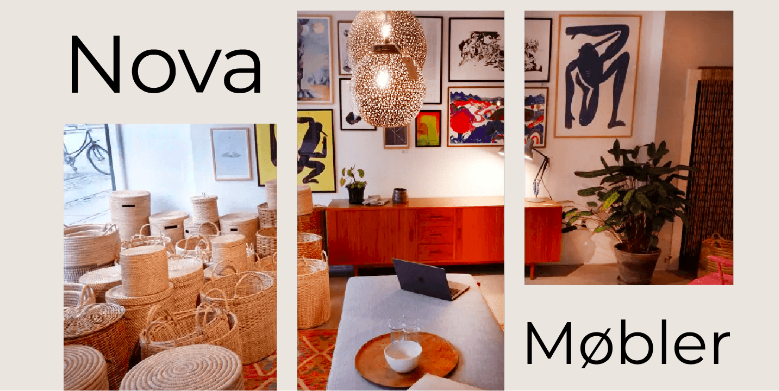

TEMA 5 - REDESIGN
I tema 5 skulle vi i grupper redesigne en selvvagt virksomheds website. Det redesign vi endte med, skulle ende som et website, hvori der også skulle være indholdsproduktion. Vi var 4 i gruppen og endte med at redesigne virksomheden ‘Nova Møbler’.
Læs Mere